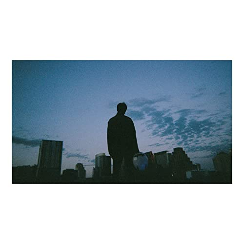
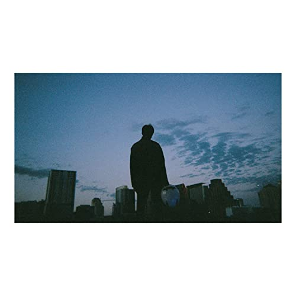
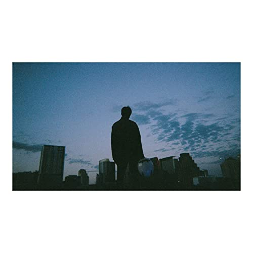
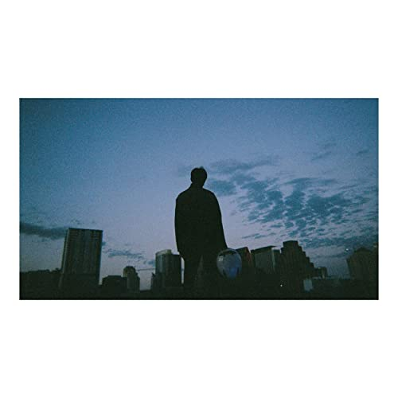

After six EPs showcasing keshi’s flexibility in songwriting and production, GABRIEL marks his debut into the studio album world. Producer Elie Rizk played the role of executive producer for the album. Word about an album first sprung in an October 2019 interview with Radio Heatwave, where keshi said: “It is one of my biggest challenges and dreams to make an album that is cohesive through-and-through that is meant to be listened from beginning to end. That has always been the goal since Continuum and Battle Studies and Blonde and TRAPSOUL and Take Care, like they all have this top-to-bottom sort of aspect to it.” However, it was first formally announced in a celebratory post regarding the release of his sixth EP always, where he says: “I wanted skeletons, bandaids & always to be an introduction to who I am as an artist. Now that they’re done, it’s time to start working on the album.”

 
